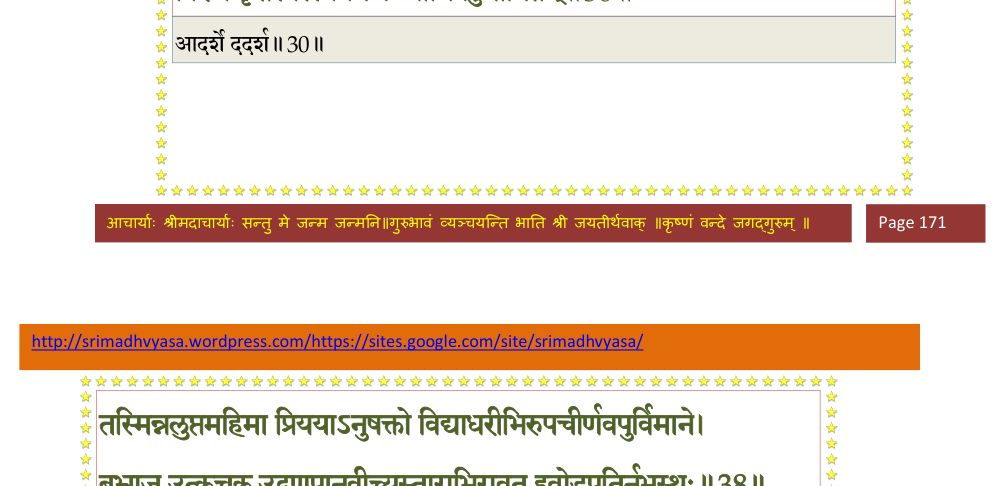
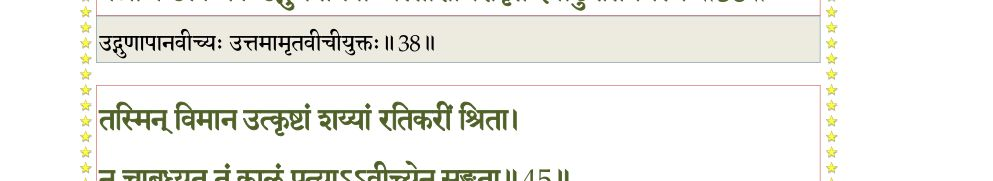
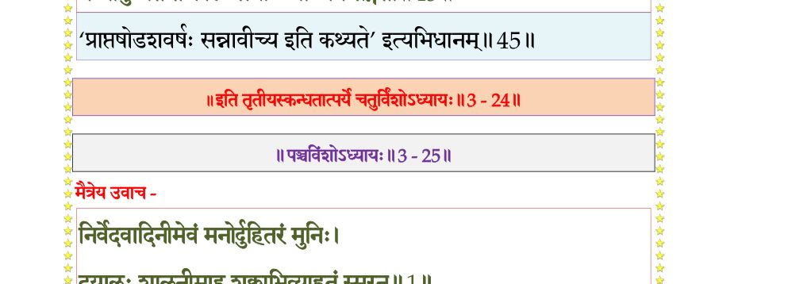

स्कन्ध 3 · अध्याय 24
श्लोक १
मैत्रेय उवाच–
पितृभ्यां प््रास्थिते साध्वी पतिमिङ्गितकोविदा ।
नित्यं पर्यचरत् प््राीत्या भवानीव भवं प््राभुम्।। १ ।।
पितृभ्यां प््रास्थिते साध्वी पतिमिङ्गितकोविदा ।
नित्यं पर्यचरत् प््राीत्या भवानीव भवं प््राभुम्।। १ ।।
श्लोक २
विस्रम्भेणात्मशौचेन गौरवेण दमेन च ।
शुश्रूषया सौहृदेन वाचा मधुरया प््राभो।। २ ।।
शुश्रूषया सौहृदेन वाचा मधुरया प््राभो।। २ ।।
श्लोक ३
विसृज्य कामं दम्भं च द्वेषं लोभमघं मदम् ।
अप््रामत्तोद्यता नित्यं तेजीयांसमतोषयत्।। ३ ।।
अप््रामत्तोद्यता नित्यं तेजीयांसमतोषयत्।। ३ ।।
श्लोक ४
स वै देवर्षिवर्यस्तां मानवीं समनुव्रताम् ।
दैवाद् गरीयसः पत्युराशासानां महाशिषः।। ४ ।।
दैवाद् गरीयसः पत्युराशासानां महाशिषः।। ४ ।।
श्लोक ५
कालेन भूयसा क्षामां कर्शितां व्रतचर्यया ।
प््रोमगद्गदया वाचा पीडितः कृपयाऽब्रवीत्।। ५ ।।
प््रोमगद्गदया वाचा पीडितः कृपयाऽब्रवीत्।। ५ ।।
श्लोक ८
तुष्टोऽहमद्य तव मानिनि मानदायाः शुश्रूषया परमया परया च भक्त्या ।
यो देहिनामयमतीव सुहृत् स्वदेहो नापेक्षितः समुचितं क्षयितुं यदर्थे ।।
या मे स्वधर्मनिरतस्य तपःसमाधिविद्यात्मयोगविजिता भगवत्प््रासादात् ।
तामेव ते मदनुभावनयाऽवरुद्धां दृष्टिं प््रापश्य वितराम्यभयामशोकाम ।।
अन्ये पुनर्भगवतो भ्रुव उद्विजृम्भविभ्रंशितार्थरचनाः किमुरुक्रमस्य ।
सिद्धाऽसि भुङ्क्ष्व विभवान् निजधर्मदेहान् दिव्यान् नरैर्दुरधिगान्
नृपविक्रियाभिः ।। ८ ।।
यो देहिनामयमतीव सुहृत् स्वदेहो नापेक्षितः समुचितं क्षयितुं यदर्थे ।।
या मे स्वधर्मनिरतस्य तपःसमाधिविद्यात्मयोगविजिता भगवत्प््रासादात् ।
तामेव ते मदनुभावनयाऽवरुद्धां दृष्टिं प््रापश्य वितराम्यभयामशोकाम ।।
अन्ये पुनर्भगवतो भ्रुव उद्विजृम्भविभ्रंशितार्थरचनाः किमुरुक्रमस्य ।
सिद्धाऽसि भुङ्क्ष्व विभवान् निजधर्मदेहान् दिव्यान् नरैर्दुरधिगान्
नृपविक्रियाभिः ।। ८ ।।
श्लोक १२
मैत्रेय उवाच–
एवं ब्रुवाणमबलाऽखिलयोगमायाविद्याविचक्षणमवेत्य गताधिरासीत् ।
सप््राश्रयप््राणयविह्वलया गिरैषा व्रीडावलोकविलसद्धसिताननाऽऽह।। ९
देवहूतिरुवाच–
राद्धं तव द्विजवृषैतदमोघयोगमायाधिपे त्वयि विभो तदवैमि भर्तः ।
यस्तेऽभ्यधायि समयः सकृदङ्गसङ्गो भूयाद् वरीयसि गुणप््रासवः सतीनाम् ।।
तत्रेतिकृत्यमुपशिक्ष यथोपदेशं येनैष मे कर्शितोऽतिरिरंसयात्मा ।
सिद्ध्येत ते कृतमनोभवधर्षितायाः कामस्तदीश भवनं सदृशं विचक्ष्व ।।
मैत्रेय उवाच–
प््रिायायाः प््रिायमन्विच्छन् कर्दमो योगमास्थितः ।
विमानं कामगं क्षत्तस्तर्ह्येवाविरचीकरत्।। १२ ।।
एवं ब्रुवाणमबलाऽखिलयोगमायाविद्याविचक्षणमवेत्य गताधिरासीत् ।
सप््राश्रयप््राणयविह्वलया गिरैषा व्रीडावलोकविलसद्धसिताननाऽऽह।। ९
देवहूतिरुवाच–
राद्धं तव द्विजवृषैतदमोघयोगमायाधिपे त्वयि विभो तदवैमि भर्तः ।
यस्तेऽभ्यधायि समयः सकृदङ्गसङ्गो भूयाद् वरीयसि गुणप््रासवः सतीनाम् ।।
तत्रेतिकृत्यमुपशिक्ष यथोपदेशं येनैष मे कर्शितोऽतिरिरंसयात्मा ।
सिद्ध्येत ते कृतमनोभवधर्षितायाः कामस्तदीश भवनं सदृशं विचक्ष्व ।।
मैत्रेय उवाच–
प््रिायायाः प््रिायमन्विच्छन् कर्दमो योगमास्थितः ।
विमानं कामगं क्षत्तस्तर्ह्येवाविरचीकरत्।। १२ ।।
श्लोक १३
सर्वकामदुघं दिव्यं सर्वरत्नसमन्वितम् ।
सर्वर्द्ध्युपचयोदर्कं मणिस्तम्भैरुपस्कृतम्।। १३ ।।
सर्वर्द्ध्युपचयोदर्कं मणिस्तम्भैरुपस्कृतम्।। १३ ।।
श्लोक १४
दिव्योपस्करणोपेतं सर्वकालसुखावहम् ।
पट्टिकाभिर्विचित्राभिः पताकाभिरलंकृतम्।। १४ ।।
पट्टिकाभिर्विचित्राभिः पताकाभिरलंकृतम्।। १४ ।।
श्लोक १५
स्रग्भिर्विचित्रमालाभिर्मञ्जुसिञ्जत् षडङ्घ्रिभिः ।
दुकूलक्षौमकौशेयैर्नानावस्त्रैर्विराजितम्।। १५ ।।
दुकूलक्षौमकौशेयैर्नानावस्त्रैर्विराजितम्।। १५ ।।
श्लोक १६
उपर्युपरि विन्यस्तनिलयेषु पृथक् पृथक् ।
क्लृप्तैः कशिपुभिः कान्तं पर्यङ्कव्यजनासनैः।। १६ ।।
क्लृप्तैः कशिपुभिः कान्तं पर्यङ्कव्यजनासनैः।। १६ ।।
श्लोक १७
तत्र तत्र विनिक्षिप्तनानाशिल्पोपशोभितम् ।
महामरकतस्थल्या जुष्टं विद्रुमवेदिभिः।। १७ ।।
महामरकतस्थल्या जुष्टं विद्रुमवेदिभिः।। १७ ।।
श्लोक १८
द्वास्सु विद्रुमदेहल्या भातं वज्रकपाटिमत् ।
शिखरेष्विन्द्रनीलेषु हेमकुम्भैरधिष्ठितम्।। १८ ।।
शिखरेष्विन्द्रनीलेषु हेमकुम्भैरधिष्ठितम्।। १८ ।।
भागवततात्पर्यनिर्णय
श्लोक १९
चक्षुष्मत्पद्मरागाद्यैर्वज्रभित्तिषु निर्मितैः ।
जुष्टं विचित्रवैतानैर्महार्हैर्हेमतोरणैः।। १९ ।।
जुष्टं विचित्रवैतानैर्महार्हैर्हेमतोरणैः।। १९ ।।
श्लोक २०
हंसपारावतव्रातैस्तत्र तत्र निकूजितम् ।
कृत्रिमान् मन्यमानैः स्वानधिरुह्याविरुह्य च।। २० ।।
कृत्रिमान् मन्यमानैः स्वानधिरुह्याविरुह्य च।। २० ।।
भागवततात्पर्यनिर्णय
श्लोक २१
विहारस्थानशयनसंवेशप््र•ङ्गणाजिरैः ।
यथोपजोषं रचितैर्विस्मापनमिवात्मनः।। २१ ।।
यथोपजोषं रचितैर्विस्मापनमिवात्मनः।। २१ ।।
श्लोक २२
ईदृग् गृहं तत् पश्यन्तीं नातिप््राीतेन चेतसा ।
सर्वभूताशयाभिज्ञः प््र•वोचत् कर्दमः स्वयम्।। २२ ।।
सर्वभूताशयाभिज्ञः प््र•वोचत् कर्दमः स्वयम्।। २२ ।।
श्लोक २३
निमज्जास्मिन् ह्रदे भीरु विमानमिदमारुह ।
इदं शुक्लकृतं तीर्थमाशिषामाप्तये नृणाम्।। २३ ।।
इदं शुक्लकृतं तीर्थमाशिषामाप्तये नृणाम्।। २३ ।।
श्लोक २४
सा तद् भर्तुः समादाय वचः कुवलयेक्षणा ।
सरजं बिभ्रती वासो वेणीभूतांश्च मूर्धजान्।। २४ ।।
सरजं बिभ्रती वासो वेणीभूतांश्च मूर्धजान्।। २४ ।।
श्लोक २५
अङ्गं च मलपङ्केन संच्छन्नं शबलस्तनम् ।
आविवेश सरस्वत्याः सरः शिवजलाशयम्।। २५ ।।
आविवेश सरस्वत्याः सरः शिवजलाशयम्।। २५ ।।
श्लोक २६
साऽन्तः सरसि वेश्मस्थाः शतानि दश कन्यकाः ।
सर्वाः कैशोरवयसो ददर्शोत्पलगन्धयः।। २६ ।।
सर्वाः कैशोरवयसो ददर्शोत्पलगन्धयः।। २६ ।।
श्लोक २७
तां दृष्ट्वा सहसोत्थाय प््र•ेचुः प््र•ञ्जलयः स्त्रियः ।
वयं कर्मकरीस्तुभ्यं शाधि नः करवाम किम्।। २७ ।।
वयं कर्मकरीस्तुभ्यं शाधि नः करवाम किम्।। २७ ।।
श्लोक २८
स्नानेन तां महार्हेण स्नापयित्वा मनस्विनीम् ।
दुकूले निर्मले नूत्ने ददुरस्यै च मानद।। २८ ।।
दुकूले निर्मले नूत्ने ददुरस्यै च मानद।। २८ ।।
श्लोक २९
भूषणानि परार्ध्यानि वरीयांसि द्युमन्ति च ।
अन्नं सर्वगुणोपेतं पानं चैवामृतासवम्।। २९ ।।
अन्नं सर्वगुणोपेतं पानं चैवामृतासवम्।। २९ ।।
श्लोक ३०
अथादर्शे स्वमात्मानं स्रग्विणं विरजाम्बरम् ।
विरजं कृतस्वस्त्ययनं कन्याभिर्बहुमानितम्।। ३० ।।
विरजं कृतस्वस्त्ययनं कन्याभिर्बहुमानितम्।। ३० ।।
भागवततात्पर्यनिर्णय

श्लोक ३१
स्नातं कृतशिरःस्नानं सर्वाभरणभूषितम् ।
निष्कग्रीवं वलयिनं कूजत्काञ्चननूपुरम्।। ३१ ।।
निष्कग्रीवं वलयिनं कूजत्काञ्चननूपुरम्।। ३१ ।।
श्लोक ३२
श्रोण्योरध्यस्तया काञ्च्या काञ्चन्या बहुरत्नया ।
हारेण च महार्हेण रुचकेन च भूषितम्।। ३२ ।।
हारेण च महार्हेण रुचकेन च भूषितम्।। ३२ ।।
श्लोक ३३
सुभ्रुवा सुदता श्लक्ष्णस्निग्धापाङ्गेन चक्षुषा ।
पद्मकोशस्पृधा नीलैरलकैश्च लसन्मुखम्।। ३३ ।।
पद्मकोशस्पृधा नीलैरलकैश्च लसन्मुखम्।। ३३ ।।
श्लोक ३४
यदा सस्मार ऋषभमृषीणां दयितं पतिम् ।
तत्र चास्ते सह स्त्रीभिर्यत्रास्ते स प््राजापतिः।। ३४ ।।
तत्र चास्ते सह स्त्रीभिर्यत्रास्ते स प््राजापतिः।। ३४ ।।
श्लोक ३५
भर्तुः पुरस्तादात्मानं स्त्रीसहस्रवृतं तदा ।
निशाम्य तद्योगगतिं संशयं प््रात्यपद्यत।। ३५ ।।
निशाम्य तद्योगगतिं संशयं प््रात्यपद्यत।। ३५ ।।
श्लोक ३६
स तां कृतमलस्नानां विभ्राजन्तीमपूर्ववत् ।
आत्मनो बिभ्रतीं रूपं संवीतरुचिरस्तनम्।। ३६ ।।
आत्मनो बिभ्रतीं रूपं संवीतरुचिरस्तनम्।। ३६ ।।
श्लोक ३७
विद्याधरीसहस्रेण सेव्यमानां सुवाससम् ।
जातभावो विमानं तदारोहयदमित्रहन्।। ३७ ।।
जातभावो विमानं तदारोहयदमित्रहन्।। ३७ ।।
श्लोक ३८
तस्मिंन्नलुप्तमहिमा प््रिाययाऽनुषक्तो
विद्याधरीभिरुपचीर्णवपुर्विमाने ।
बभ्राज उत्कचक उद्गुणपानवीच्य-
स्ताराभिरावृत इवोडुपतिर्नभस्स्थः।। ३८ ।।
विद्याधरीभिरुपचीर्णवपुर्विमाने ।
बभ्राज उत्कचक उद्गुणपानवीच्य-
स्ताराभिरावृत इवोडुपतिर्नभस्स्थः।। ३८ ।।
भागवततात्पर्यनिर्णय

श्लोक ४०
तेनाष्टलोकपविहारकुलाचलेन्द्रद्रोणीष्वनङ्गसखमारुतसौभगासु ।
सिद्धैर्नुतो द्युधुनिपातशिवस्वनासु रेमे चिरं धनदवल्ललनावरूथी।।
वैस्रम्भके सुरवने नन्दने पुष्पभद्रके ।
मानसे चैत्ररथ्ये च स रेमे रामया सह।। ४० ।।
सिद्धैर्नुतो द्युधुनिपातशिवस्वनासु रेमे चिरं धनदवल्ललनावरूथी।।
वैस्रम्भके सुरवने नन्दने पुष्पभद्रके ।
मानसे चैत्ररथ्ये च स रेमे रामया सह।। ४० ।।
श्लोक ४१
भ्राजिष्णुना विमानेन कामगेन महीयसा ।
वैमानिकानत्यशेत चरन् लोकान् यथानिलः।। ४१ ।।
वैमानिकानत्यशेत चरन् लोकान् यथानिलः।। ४१ ।।
श्लोक ४२
किं दुरापादनं तेषां पुंसामुद्दामचेतसाम् ।
यैराश्रितस्तीर्थपदश्चरणो व्यसनात्ययः।। ४२ ।।
यैराश्रितस्तीर्थपदश्चरणो व्यसनात्ययः।। ४२ ।।
श्लोक ४३
प््रोक्षयित्वा भुवो गोलं पत्न्यै यावान् स्वसंस्थया ।
बह्वाश्चर्यं महायोगी स्वाश्रमाय न्यवर्तत।। ४३ ।।
बह्वाश्चर्यं महायोगी स्वाश्रमाय न्यवर्तत।। ४३ ।।
श्लोक ४४
विभज्य नवधाऽऽत्मानं मानवीं सुरतोत्सुकाम् ।
रामां निरमयन् रेमे वर्षपूगान् मुहूर्तवत्।। ४४ ।।
रामां निरमयन् रेमे वर्षपूगान् मुहूर्तवत्।। ४४ ।।
श्लोक ४५
तस्मिन् विमान उत्कृष्टां शय्यां रतिकरीं श्रिता ।
न चाबुद्ध्यत तं कालं पत्याऽऽपीच्येन सङ्गता।। ४५ ।।
न चाबुद्ध्यत तं कालं पत्याऽऽपीच्येन सङ्गता।। ४५ ।।
भागवततात्पर्यनिर्णय

श्लोक ४६
एवं योगानुभावेन दम्पत्यो रममाणयोः ।
शतं व्यतीयुः शरदः कामलालसयोर्मनाक्।। ४६ ।।
शतं व्यतीयुः शरदः कामलालसयोर्मनाक्।। ४६ ।।
श्लोक ४७
तस्यामाधत्त रेतस्तां भावयन्नात्मनाऽऽत्मवित् ।
नवधा विधाय रूपं स्वं सत्यसंकल्पविद् विभुः।। ४७ ।।
नवधा विधाय रूपं स्वं सत्यसंकल्पविद् विभुः।। ४७ ।।
श्लोक ४८
ततस्ताः सुषुवे सद्यो देवहूतिः स्त्रियः प््राजाः ।
सर्वास्ताश्चारुसर्वाङ्ग्यो लोहितोत्पलगन्धयः।। ४८ ।।
सर्वास्ताश्चारुसर्वाङ्ग्यो लोहितोत्पलगन्धयः।। ४८ ।।
श्लोक ४९
पतिं सा प््राव्रजिष्यन्तं तदाऽऽलक्ष्योशती सती ।
स्मयमाना विक्लवेन हृदयेन विदूयता।। ४९ ।।
स्मयमाना विक्लवेन हृदयेन विदूयता।। ४९ ।।
श्लोक ५०
लिखन्त्यधोमुखी भूमिं पदा नखमणिश्रिया ।
उवाच ललितां वाचं निरुध्याश्रुकलां शनैः।। ५० ।।
उवाच ललितां वाचं निरुध्याश्रुकलां शनैः।। ५० ।।
श्लोक ५१
सर्वं तद् भगवान् मह्यमुपोवाह प््रातिश्रुतम् ।
अथाऽपि मे प््रापन्नाया अभयं दातुमर्हसि।। ५१ ।।
अथाऽपि मे प््रापन्नाया अभयं दातुमर्हसि।। ५१ ।।
श्लोक ५२
ब्रह्मन् दुहितृभिस्तुभ्यं विमृश्याः पतयः समाः ।
कश्चित् स्यान्मे विशोकाय त्वयि प््राव्रजिते वनम्।। ५२ ।।
कश्चित् स्यान्मे विशोकाय त्वयि प््राव्रजिते वनम्।। ५२ ।।
श्लोक ५३
एतावताऽलं कालेन व्यतिक्रान्तेन मे प््राभो ।
इन्द्रियार्थप््रासङ्गेन परित्यक्तपरात्मनः।। ५३ ।।
इन्द्रियार्थप््रासङ्गेन परित्यक्तपरात्मनः।। ५३ ।।
श्लोक ५४
इन्द्रियार्थेषु सज्जन्त्या प््रासङ्गस्त्वयि मे कृतः ।
अजानन्त्या परं भावं तथाऽप्यस्त्वभवाय मे।। ५४ ।।
अजानन्त्या परं भावं तथाऽप्यस्त्वभवाय मे।। ५४ ।।
श्लोक ५५
संयोगः संसृतेर्हेतुरसत्सु विहितो धिया ।
स एव साधुषु कृतो निःसङ्गत्वाय कल्पते।। ५५ ।।
स एव साधुषु कृतो निःसङ्गत्वाय कल्पते।। ५५ ।।
श्लोक ५६
नेह यत् कर्म धर्माय न विरागाय कल्पते ।
न तीर्थपदसेवायै जीवन्नपि मृतो हि सः।। ५६ ।।
न तीर्थपदसेवायै जीवन्नपि मृतो हि सः।। ५६ ।।
श्लोक ५७
साऽहं भगवतो नूनं वञ्चिता मायया दृढम् ।
या त्वां विमुक्तिदं प््र•प्य न मुमुक्षे ह बन्धनात्।। ५७ ।।
या त्वां विमुक्तिदं प््र•प्य न मुमुक्षे ह बन्धनात्।। ५७ ।।
।। इति श्रीमद्भागवते तृतीयस्कन्धे चतुर्विंशोऽध्यायः ।।